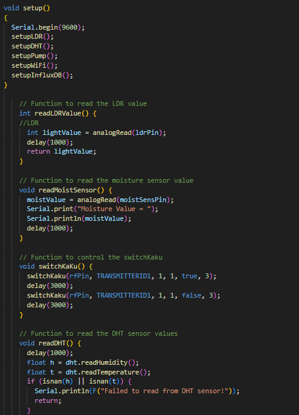
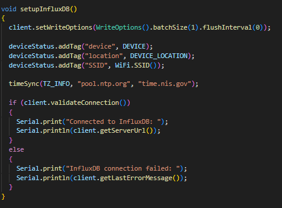
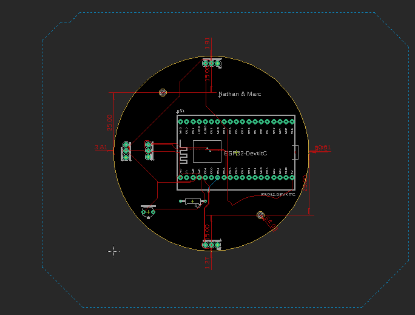
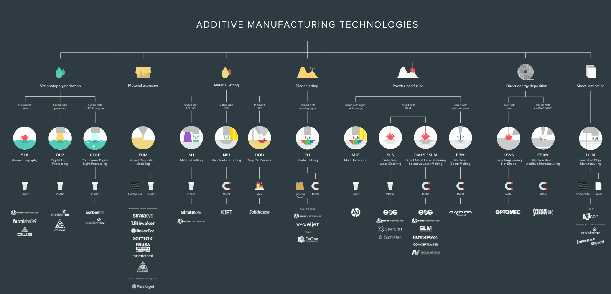
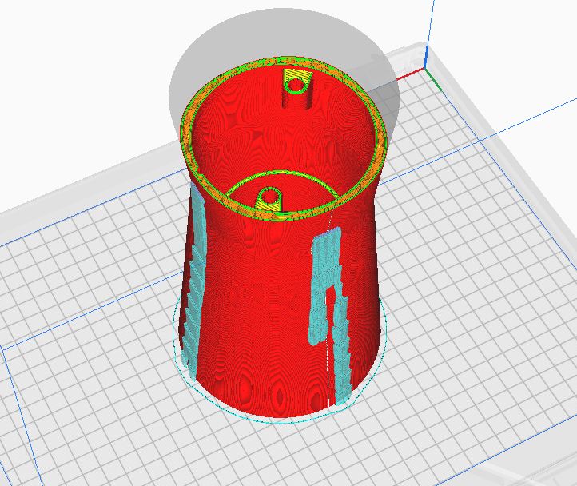
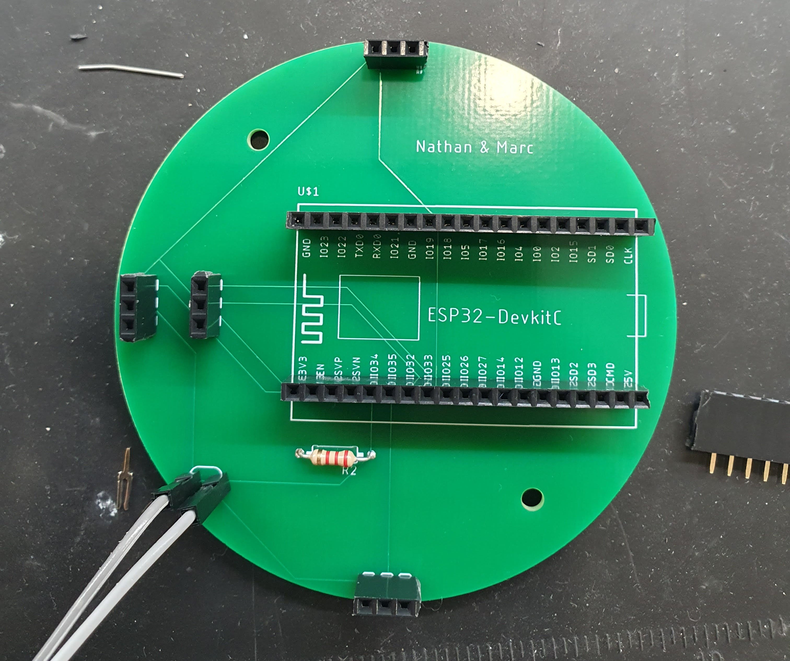
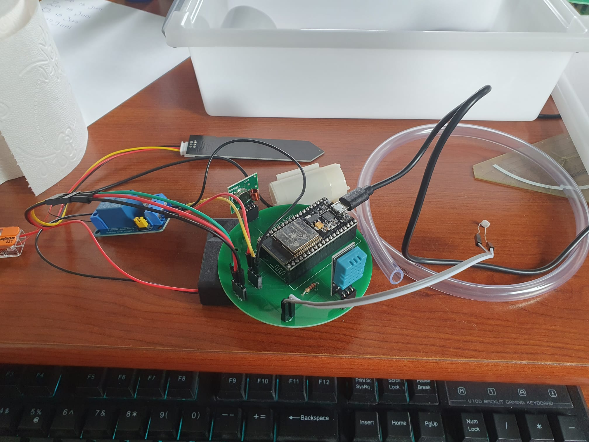

Workshop Internet of Things
Geprobeerd om de verschillende sensors in functies op te delen.
Workshop Sensor data opslaan op influxDB
De data van de sensors opgeslagen in influxDB.
Workshop PCB ontwerp
Ik heb samen met Nathan deze ronde PCB ontworpen. We hadden allebei het idee dat het leuker zou zijn om de schakeling te integreren met de plantenpot. Vandaar het ronde ontwerp dat dus onderin een plantenpot past.
Workshop Additive Manufacturing
Workshop over de verschillende AMT technieken. Altijd interessant om in het achterhoofd te houden wanneer dit een goede toepassing zou kunnen zijn.
Workshop SolidWorks

Ik heb met Nathan naar IoT schakeling gekeken en samen het 3D model gemaakt in SOLIDWorks, daaruit is het bovenstaande model gekomen.
Workshop Ultimaker cura
Workshop over hoe je een 3D model kan slicen en printen met de Ultimaker. Uiteindelijk heb ik de precieze settings voor de printer nog nagevraagd bij een klasgenoot.
Workshop Solderen
De PCB met headers erop gesoldeerd.
De schakeling aangesloten op de gesoldeerde PCB.
Workshop 3D printen

In de 3D print past precies een HAN beker zodat de schakeling zeker niet met vocht in aanraking komt. Via de bovenste gaten komen de LDR en Moisture sensor naar buiten en via de zijkant de temperatuurmeter.